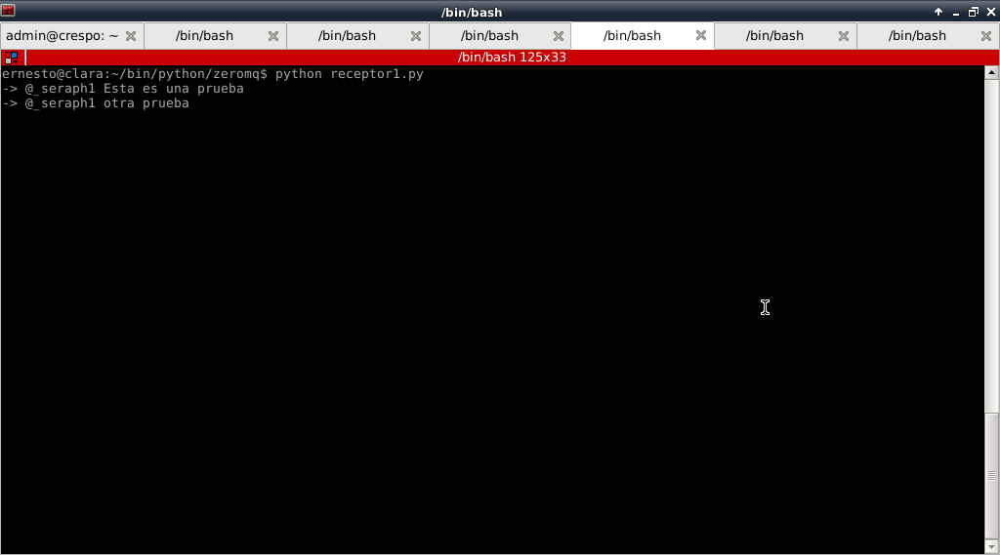

Tutorial de ZeroMQ con Python (REP/REQ y PUB/SUB). Parte 5.
Posted on Sat 02 June 2012 in Tutorial Python • 2 min read
Continuando con los artículos sobre ZeroMQ.
En la revista Linux Magazine versión en español publicaron un artículo sobre ZeroMQ con Python.
Explican el uso de 2 patrones en conjunto, REP/REQ y PUB/SUB. Colocan como ejemplo una simulación del proceso de envío de tweets de twitter.
La siguiente figura muestra la simulación:
El emisor genera los mensajes, el twitter los recibe y los publica, luego cada receptor se suscribe al twitter y recibe la información que le interesa.
EL código del emisor es el siguiente:
#!/usr/bin/python
#Se importa zeroMQ
import zmq
#Se crea el contexto
context = zmq.Context()
#Se crea el socket con el parametro REQ
socket = context.socket(zmq.REQ)
#Se asocia la IP y el puerto del socket.
socket.connect("tcp://127.0.0.1:4000")
#Se genera los mensajes estilo tuiter y se envia al socket.
for i in ['@_seraph1 Esta es una prueba','@otro viendo el juego', '@_seraph1 otra prueba','@otro otro']:
socket.send(i)
msg_in = socket.recv()
El código del tuiter es el siguiente:
#!/usr/bin/env python
#Se importa zeroMQ
import zmq
#Se importa choice de random
from random import choice
#Se crea el contexto
context = zmq.Context()
#Se define el socket de recepcion con argumento REP
socket_recv = context.socket(zmq.REP)
#Se asocia a una IP y puerto el socket de recepcion
socket_recv.bind("tcp://127.0.0.1:4000")
#Se define el socket de publicacion con argumento PUB
socket = context.socket(zmq.PUB)
#Se asocia la ip y un puerto distinto al anterio socket
socket.bind("tcp://127.0.0.1:5000")
#Se crea un ciclo
while True:
#Se recibe el mensaje del socket de recepcion
msg = socket_recv.recv()
#Se envia el mensaje de recepcion
socket_recv.send(msg)
#Se muestra el mensaje en pantalla
print "Reenvio: {0}".format(msg)
#Se envia el mensaje al socket de publicacion
socket.send(msg)
Se muestra ahora el código de los receptores:
Receptor 1:
#!/usr/bin/python
#Se importa zeroMQ
import zmq
#Se crea el contexto
context = zmq.Context()
#Se crea el socket de suscripcion
socket = context.socket(zmq.SUB)
#Se asocia ese socket a la IP y puerto donde publica tuiter
socket.connect("tcp://127.0.0.1:5000")
#Se suscribe a escuchar los mensajes de @_seraph1
socket.setsockopt(zmq.SUBSCRIBE, "@_seraph1")
#se crea un ciclo donde se recibe los mensajes
while True:
print "->",socket.recv()
Receptor 2:
#!/usr/bin/python
#Se importa zeroMQ
import zmq
#Se crea el contexto
context = zmq.Context()
#Se crea el socket de suscripcion
socket = context.socket(zmq.SUB)
#Se asocia ese socket a la IP y puerto donde publica tuiter
socket.connect("tcp://127.0.0.1:5000")
#Se suscribe a escuchar los mensajes de @otro
socket.setsockopt(zmq.SUBSCRIBE, "@otro")
#se crea un ciclo donde se recibe los mensajes
while True:
print "->",socket.recv()
En la figura se muestra el resultado de twitter:

En la siguiente figura se muestra el resultado del receptor 1:

Y por último el receptor 2:
En la versión de la revista no publicaron el código de los receptores.
Esto muestra el nivel de complejidad en sistema de colas que se puede lograr con ZeroMQ.
¡Haz tu donativo! Si te gustó el artículo puedes realizar un donativo con Bitcoin (BTC) usando la billetera digital de tu preferencia a la siguiente dirección: 17MtNybhdkA9GV3UNS6BTwPcuhjXoPrSzV
O Escaneando el código QR desde la billetera: